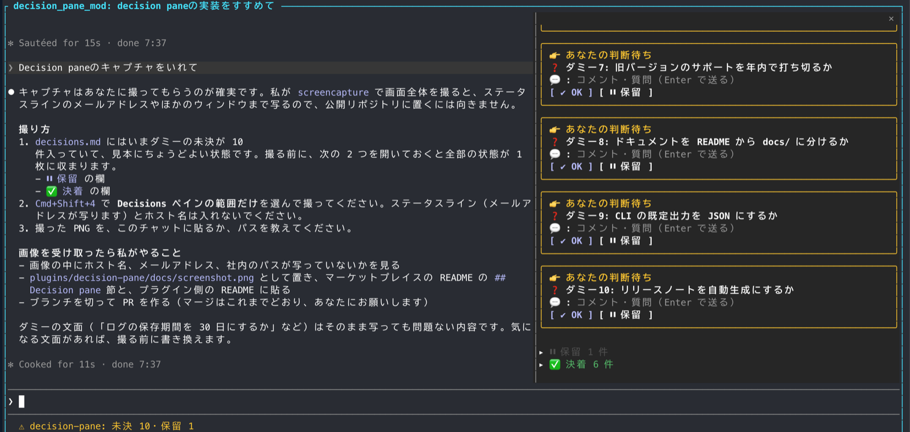
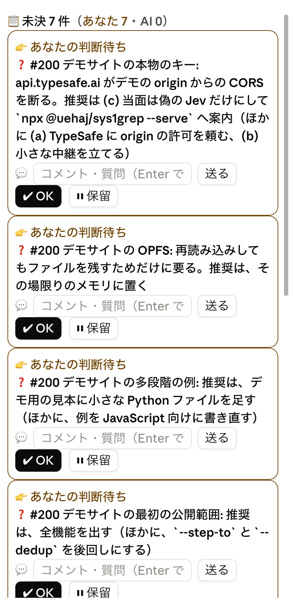

What it does
✔ OK
Rewrites the line as - [x] … (承認 time) and moves it to the folded settled section.
⏸ Hold
Marks it - [~] … (保留 time) and folds it away; ▶ Resume brings it back.
💬 Comment
Adds a comment under the item; the AI answers beneath it and may refine the question.
👉 / ⏳ Whose turn
Each card’s color and icon say whose turn it is; the counts also show in the status line.
📄 Plain Markdown
Everything stays a checklist in decisions.md: edit it by hand, read it in a git diff.
🌐 English and Japanese
The pane follows Claude Code’s language setting or LANG; the marks in the file are the same in both.
How your answer reaches the agent
The mod sends the agent nothing. When a file the agent has read with the Read tool changes on disk, Claude Code attaches the diff to the agent’s next turn — your next message, or a background task’s notice. So once the agent has read decisions.md with Read early in the session, your clicks reach it. A click alone does not wake the agent.
Install
# add the marketplace, then the mod claude plugin marketplace add uehaj/uehaj-marketplace claude plugin install decision-pane@uehaj-marketplace # mods need this (in your shell profile) export CLAUDE_CODE_ENABLE_FUNCTION_HOOKS=1
The pane opens when a session starts; /decisions opens it when the terminal is too narrow. Installed at user scope, it also loads in the desktop app’s local sessions.
Add this to CLAUDE.md
Installing it is not enough: the agent has to be told to write its questions there. Add this to a CLAUDE.md (for example ~/.claude/CLAUDE.md):
## Unanswered questions go to decisions.md - A question or approval you are waiting on the user for: append it to decisions.md in the working directory, one line each: `- [ ] <subject>: <what to decide>. Recommended: <option>`. Details go on lines indented by two spaces under it. - If the file does not exist, create it and add decisions.md to .git/info/exclude. - Never rewrite a `- [x]` (approved) or `- [~]` (held) line. - The first time in a session you touch decisions.md, read it with the Read tool, not Bash, so the pane's approvals and comments reach you as a diff on your next turn.
A Japanese version is in the README. The marks written into the file (承認, 保留, コメント, 回答) are the same in either language.